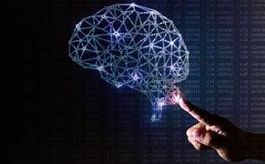

Muchas de las actividades mentales humanas, tales como escribir programas de cómputo, demostrar teoremas, razonar con sentido común y aún conducir un vehículo, normalmente se dice que requieren “inteligencia”. Durante las décadas pasadas se ha logrado construir programas que pueden realizar tareas como esas. Existen programas que pueden diagnosticar enfermedades, resolver ecuaciones diferenciales en forma simbólica, analizar circuitos electrónicos, entender en forma limitada frases habladas y escritas o escribir programas de cómputo cumpliendo especificaciones. Se puede decir que tales sistemas poseen cierto grado de Inteligencia Artificial (IA).
Las definiciones anteriores implican que las máquinas para ser consideradas inteligentes deben exhibir ciertas habilidades, suficientemente complejas como para ser tratadas como áreas independientes. La forma de abordaje de cada una de estas áreas suele ser tan disímil, que es difícil reconocerles un origen común. 1- Procesamiento del Lenguaje Natural. 2- Consulta inteligente de base de datos. 3- Robótica. 4- Programación Automática. 5- Sistemas Expertos. 6- Prueba automática de teoremas y matemática simbólica. 7- Problemas de optimización combinatorios y de itinerarios. 8- Percepción y reconocimiento de patrones. 9- Autoaprendizaje.
Sin afán de sorprenderlos y dejarlos atónitos, debo informarles lisa y llanamente que actualmente en el mundo existen máquinas capaces de pensar, aprender y crear. Además, su capacidad para hacer lo anterior aumentará rápidamente hasta que –en un futuro previsible- la magnitud de problemas que tendrán capacidad de manejar irá a la par con la capacidad de la mente humana para hacer lo mismo. (Herbert Simon, 1957, Premio Nobel de economia,1978, por sus trabajos en la Teoría de las decisiones).
Se puede decir que la IA nace antes que la primera computadora electrónica como la rama de las ciencias de la computación que se ocupa de construir sistemas que permitan exhibir un comportamiento cada vez más inteligente, o que observado en un ser humano pueda ser calificado como inteligente (Feigenbaum) Algunas definiciones. 1- Hacer que las máquinas hagan cosas que requerirían inteligencia si fueran hechas por el hombre. M. Minsky 2- Intentar hacer las computadoras más útiles y entender los principios que hacen posible la inteligencia. Winston 3- Entender y estudiar científicamente los procesos comunes que subyacen en el pensar y el percibir ya sea en el hombre como en la máquina. N. Nilsson 4- Es la parte de la ciencia de la computación que investiga los proceso de razonamiento simbólicos y no algorítmicos y la representación de conocimiento simbólica para su uso en máquinas inteligentes. Buchanan – Feigenbaum